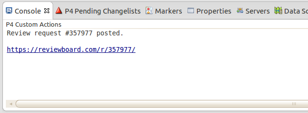

p4actions is Eclipse plug-in that adds custom actions to pending Perforce changelists. You can execute any script or command from the context menu of the changelist without leaving the IDE. The output of the executed action is displayed in the Console view.
http://xakcop.com/p4actions/site (should work for all versions of Eclipse)Let's say that we have a script that sends a changelist for review and we want to add an action for this. Open the Preferences and navigate to Team->Perforce->Custom Actions. Click the Add button and you will get the following dialog:
Choose name for the new action and select an executable. In this concrete example we are using the post-review script and we specify {cln} as argument which is the placeholder for the selected changelist number.
Now when you right-click on a pending changelist in the 'P4 Pending Changelists' view, you will find the new action in the 'Custom Actions' submenu:
The output of the executed command is displayed in the Console view. If the output contains hyperlinks, you can click them to open:

Feel free to send me any questions, suggestions or feedback at my email address: rgerganov@gmail.com